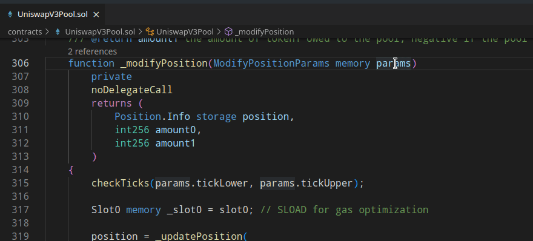
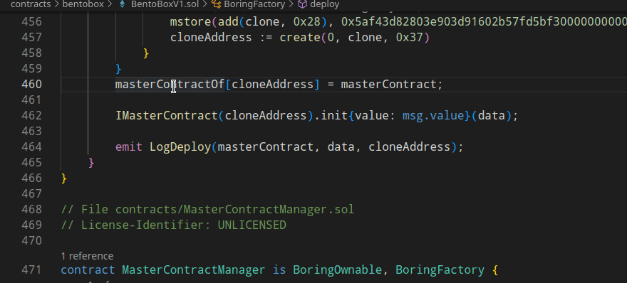
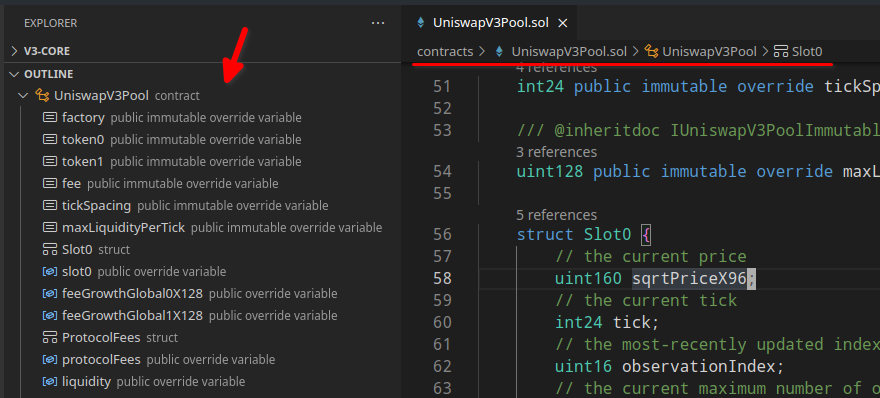
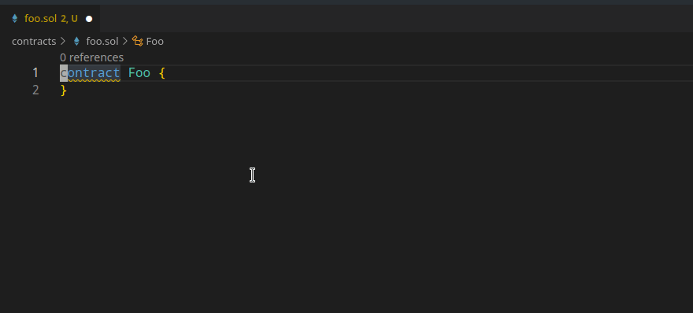
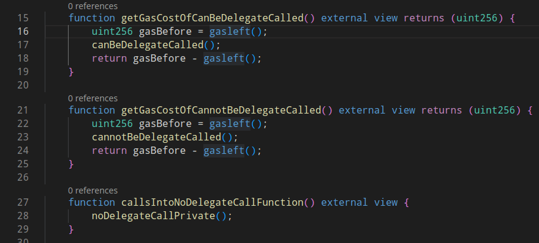

Solidity LSP server#
Woke implements a LSP server for Solidity. The only currently supported communication channel is TCP.
Woke LSP server can be run using:
Or with an optional --port argument:
Info
Multi-root workspaces are not currently supported.
Implementations#
- VS Code Extension
Configuration options#
Server configuration options are loaded using the standard interface from LSP clients. The process of setting the configuration options is client specific. Configuration changes are handled by the server, and the project is recompiled if the compilation options change.
The following configuration options are supported:
woke.compiler.solc.allow_paths,woke.compiler.solc.evm_version,woke.compiler.solc.include_paths,woke.compiler.solc.remappings,woke.compiler.solc.target_version.
The semantics of these configuration options are explained in the configuration section.
Features#
Go to definition#

Go to type definition#

Go to implementation#

Find references#

Type hierarchy#

Also works for virtual functions.

Document links#

Code lens#
Number of references is shown above each declaration.

Document symbols#

Diagnostics#


Rename#

Debugging#
Woke LSP server can be debugged using: